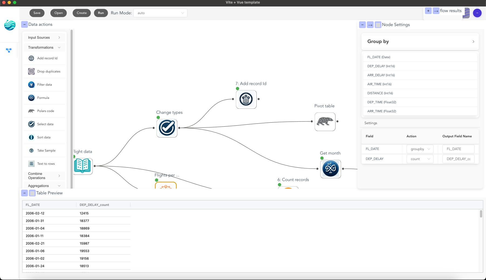

Flowfile
Flowfile is a visual ETL tool that combines drag-and-drop workflow building with the speed of Polars dataframes. Build data pipelines visually, transform data using powerful nodes, and analyze results - all without writing code.

⚡ Technical Design
Flowfile operates as three interconnected services:
- Designer (Electron + Vue): Visual interface for building data flows
- Core (FastAPI): ETL engine using Polars for data transformations (
:63578) - Worker (FastAPI): Handles computation and caching of data operations (
:63579)
Each flow is represented as a directed acyclic graph (DAG), where nodes represent data operations and edges represent data flow between operations.
🔥 Example Use Cases
Data Cleaning & Transformation
- Complex joins (fuzzy matching)
- Text to rows transformations
- Advanced filtering and grouping
- Custom formulas and expressions
- Filter data based on conditions
Data Integration
- Combine data from multiple sources
- Fuzzy matching of customer records
- Standardize data formats
- Handle messy Excel files
ETL Operations
- Excel to database pipelines
- Data quality checks
🚀 Getting Started
Building Your First Flow
Flowfile allows you to create data pipelines visually:
- Click Create to start a new
.flowfile - Drag nodes from the left sidebar onto the canvas
- Connect nodes by dragging between them
- Configure each node by clicking on it
- Click Run to execute your flow
- Click on nodes after running to preview results
Learn more about building flows
Prerequisites
- Python 3.10+
- Node.js 16+
- Poetry (Python package manager)
- Make (optional, for build automation)
Installation & Running
Using Make:
make all # Install and build everything
make clean # Clean build artifacts
Manual installation:
# Install Python dependencies
poetry install
# Start services (in separate terminals)
poetry run flowfile_worker # Starts worker on :63579
poetry run flowfile_core # Starts core on :63578
# Start desktop app
cd flowfile_frontend
npm install
npm run dev # Starts Electron app (frontend on :3000)